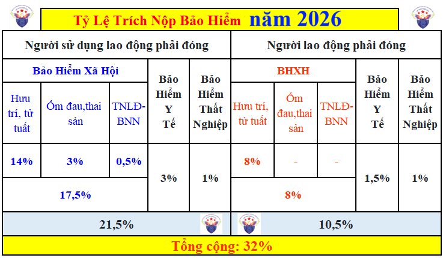
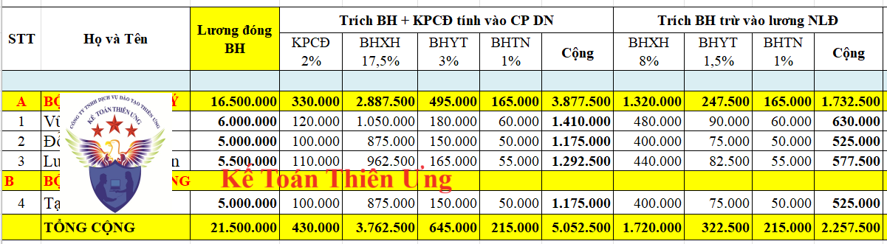

Tỷ lệ trích đóng BHXH mới nhất năm 2026 theo quy định tại Luật Bảo hiểm xã hội số: 41/2024/QH15 và Nghị định 158/2025/NĐ-CP
Bảng tỷ lệ trích nộp BHXH, BHYT, BHTN mới nhất năm 2026 như sau:

Chú thích: TNLĐ-BNN: Quỹ bảo hiểm tai nạn lao động, bệnh nghề nghiệp
Cách trích nộp từng loại bảo hiểm theo tỷ lệ trích trong bảng trên thì các bạn vui lòng xem tại ví dụ hướng dẫn ở cuối bài viết này nhé
1. Tỷ lệ trích đóng bảo hiểm xã hội bắt buộc:
Theo khoản 1 điều 32 của Luật Bảo hiểm xã hội số: 41/2024/QH15 có hiệu lực từ ngày 01/07/2025 thì:
Điều 32. Tỷ lệ đóng bảo hiểm xã hội
1. Tỷ lệ đóng bảo hiểm xã hội bắt buộc bao gồm:
a) 3% tiền lương làm căn cứ đóng bảo hiểm xã hội vào quỹ ốm đau và thai sản;
(Trong đó: Người sử dụng lao động (DN) đóng 3%, Người lao động đóng 0%)
b) 22% tiền lương làm căn cứ đóng bảo hiểm xã hội vào quỹ hưu trí và tử tuất.
(Trong đó: Người sử dụng lao động (DN) đóng 14%, Người lao động đóng 8%)
Theo điểm a khoản 1 điều 33 của Luật Bảo hiểm xã hội số: 41/2024/QH15 có hiệu lực từ ngày 01/07/2025 thì:
Điều 33. Mức đóng, phương thức và thời hạn đóng bảo hiểm xã hội bắt buộc của người lao động
1. Mức đóng và phương thức đóng của đối tượng quy định tại các điểm a, b, c, d, i, k và l khoản 1 và khoản 2 Điều 2 của Luật này được quy định như sau:
a) Mức đóng hằng tháng bằng 8% tiền lương làm căn cứ đóng bảo hiểm xã hội bắt buộc vào quỹ hưu trí và tử tuất;
Theo khoản 1 điều 32 của Luật Bảo hiểm xã hội số: 41/2024/QH15 có hiệu lực từ ngày 01/07/2025 thì:
Điều 34. Mức đóng, phương thức và thời hạn đóng bảo hiểm xã hội bắt buộc của người sử dụng lao động
1. Người sử dụng lao động hằng tháng đóng bảo hiểm xã hội bắt buộc tính trên tiền lương làm căn cứ đóng bảo hiểm xã hội bắt buộc của đối tượng quy định tại các điểm a, b, c, d, i, k và l khoản 1 và khoản 2 Điều 2 của Luật này như sau:
a) 3% vào quỹ ốm đau và thai sản;
b) 14% vào quỹ hưu trí và tử tuất.
Trong đó: điều 2 của Luật Bảo hiểm xã hội số: 41/2024/QH15 như sau:
Điều 2. Đối tượng tham gia bảo hiểm xã hội bắt buộc và bảo hiểm xã hội tự nguyện
1. Người lao động là công dân Việt Nam thuộc đối tượng tham gia bảo hiểm xã hội bắt buộc bao gồm:
a) Người làm việc theo hợp đồng lao động không xác định thời hạn, hợp đồng lao động xác định thời hạn có thời hạn từ đủ 01 tháng trở lên, kể cả trường hợp người lao động và người sử dụng lao động thỏa thuận bằng tên gọi khác nhưng có nội dung thể hiện về việc làm có trả công, tiền lương và sự quản lý, điều hành, giám sát của một bên;
b) Cán bộ, công chức, viên chức;
c) Công nhân và viên chức quốc phòng, công nhân công an, người làm công tác khác trong tổ chức cơ yếu;
d) Sĩ quan, quân nhân chuyên nghiệp quân đội nhân dân; sĩ quan, hạ sĩ quan nghiệp vụ, sĩ quan, hạ sĩ quan chuyên môn kỹ thuật công an nhân dân; người làm công tác cơ yếu hưởng lương như đối với quân nhân;
đ) Hạ sĩ quan, binh sĩ quân đội nhân dân; hạ sĩ quan, chiến sĩ nghĩa vụ công an nhân dân; học viên quân đội, công an, cơ yếu đang theo học được hưởng sinh hoạt phí;
e) Dân quân thường trực;
g) Người lao động đi làm việc ở nước ngoài theo hợp đồng quy định tại Luật Người lao động Việt Nam đi làm việc ở nước ngoài theo hợp đồng, trừ trường hợp điều ước quốc tế mà nước Cộng hòa xã hội chủ nghĩa Việt Nam là thành viên có quy định khác;
h) Vợ hoặc chồng không hưởng lương từ ngân sách nhà nước được cử đi công tác nhiệm kỳ cùng thành viên cơ quan đại diện nước Cộng hòa xã hội chủ nghĩa Việt Nam ở nước ngoài được hưởng chế độ sinh hoạt phí;
i) Người quản lý doanh nghiệp, kiểm soát viên, người đại diện phần vốn nhà nước, người đại diện phần vốn của doanh nghiệp theo quy định của pháp luật; thành viên Hội đồng quản trị, Tổng giám đốc, Giám đốc, thành viên Ban kiểm soát hoặc kiểm soát viên và các chức danh quản lý khác được bầu của hợp tác xã, liên hiệp hợp tác xã theo quy định của Luật Hợp tác xã có hưởng tiền lương;
k) Người hoạt động không chuyên trách ở cấp xã, ở thôn, tổ dân phố;
l) Đối tượng quy định tại điểm a khoản này làm việc không trọn thời gian, có tiền lương trong tháng bằng hoặc cao hơn tiền lương làm căn cứ đóng bảo hiểm xã hội bắt buộc thấp nhất;
m) Chủ hộ kinh doanh của hộ kinh doanh có đăng ký kinh doanh tham gia theo quy định của Chính phủ;
n) Người quản lý doanh nghiệp, kiểm soát viên, người đại diện phần vốn nhà nước, người đại diện phần vốn của doanh nghiệp theo quy định của pháp luật; thành viên Hội đồng quản trị, Tổng giám đốc, Giám đốc, thành viên Ban kiểm soát hoặc kiểm soát viên và các chức danh quản lý khác được bầu của hợp tác xã, liên hiệp hợp tác xã theo quy định của Luật Hợp tác xã không hưởng tiền lương.
2. Người lao động là công dân nước ngoài làm việc tại Việt Nam thuộc đối tượng tham gia bảo hiểm xã hội bắt buộc khi làm việc theo hợp đồng lao động xác định thời hạn có thời hạn từ đủ 12 tháng trở lên với người sử dụng lao động tại Việt Nam, trừ các trường hợp sau đây:
a) Di chuyển trong nội bộ doanh nghiệp theo quy định của pháp luật về người lao động nước ngoài làm việc tại Việt Nam;
b) Tại thời điểm giao kết hợp đồng lao động đã đủ tuổi nghỉ hưu theo quy định tại khoản 2 Điều 169 của Bộ luật Lao động;
c) Điều ước quốc tế mà nước Cộng hòa xã hội chủ nghĩa Việt Nam là thành viên có quy định khác.
3. Người sử dụng lao động thuộc đối tượng tham gia bảo hiểm xã hội bắt buộc bao gồm cơ quan nhà nước, đơn vị sự nghiệp công lập; cơ quan, đơn vị, doanh nghiệp thuộc Quân đội nhân dân, Công an nhân dân và tổ chức cơ yếu; tổ chức chính trị, tổ chức chính trị - xã hội, tổ chức chính trị xã hội - nghề nghiệp, tổ chức xã hội - nghề nghiệp, tổ chức xã hội khác; cơ quan, tổ chức nước ngoài, tổ chức quốc tế hoạt động trên lãnh thổ Việt Nam; doanh nghiệp, tổ hợp tác, hợp tác xã, liên hiệp hợp tác xã, hộ kinh doanh, tổ chức khác và cá nhân có thuê mướn, sử dụng lao động theo hợp đồng lao động.
Mức đóng vào quỹ TNLĐ, BNN thực hiện theo quy định tại Điểm a Khoản 2 Điều 43 Nghị định 158/2025/NĐ-CP có hiệu lực từ ngày 01/07/2025 như sau:
2. Sửa đổi, bổ sung một số điều của Nghị định số 58/2020/NĐ-CP ngày 27 tháng 5 năm 2020 của Chính phủ quy định mức đóng bảo hiểm xã hội bắt buộc vào Quỹ bảo hiểm tai nạn lao động, bệnh nghề nghiệp như sau:
a) Sửa đổi, bổ sung khoản 1 Điều 4 như sau:
“1. Người sử dụng lao động hằng tháng đóng trên tiền lương làm căn cứ đóng bảo hiểm xã hội bắt buộc của đối tượng quy định tại các điểm a, b, c, d, đ, e, i và l khoản 1 Điều 2 và khoản 2 Điều 2 của Luật Bảo hiểm xã hội theo một trong các mức sau:
a) Mức đóng bình thường bằng 0,5% tiền lương làm căn cứ đóng bảo hiểm xã hội bắt buộc; đồng thời được áp dụng đối với người lao động là cán bộ, công chức, viên chức và người thuộc lực lượng vũ trang thuộc các cơ quan của Đảng, Nhà nước, tổ chức chính trị - xã hội, quân đội, công an, đơn vị sự nghiệp công lập sử dụng ngân sách nhà nước;
b) Mức đóng bằng 0,3% tiền lương làm căn cứ đóng bảo hiểm xã hội bắt buộc được áp dụng đối với doanh nghiệp bảo đảm điều kiện theo quy định tại Điều 5 của Nghị định này.
Trong đó: Điều 5 của Nghị định 158/2025/NĐ-CPn như sau:
Điều 5. Các trường hợp được áp dụng mức đóng thấp hơn mức đóng bình thường vào Quỹ bảo hiểm tai nạn lao động, bệnh nghề nghiệp
Điều 5. Các trường hợp được áp dụng mức đóng thấp hơn mức đóng bình thường vào Quỹ bảo hiểm tai nạn lao động, bệnh nghề nghiệp
Doanh nghiệp hoạt động trong các ngành nghề có nguy cơ cao về tai nạn lao động, bệnh nghề nghiệp được áp dụng mức đóng quy định tại điểm b khoản 1 Điều 4 của Nghị định này nếu bảo đảm các điều kiện sau đây:
1. Trong vòng 03 năm tính đến thời điểm đề xuất không bị xử phạt vi phạm hành chính bằng hình thức phạt tiền, không bị truy cứu trách nhiệm hình sự về hành vi vi phạm pháp luật về an toàn, vệ sinh lao động và bảo hiểm xã hội;
2. Thực hiện việc báo cáo định kỳ tai nạn lao động và báo cáo về an toàn, vệ sinh lao động chính xác, đầy đủ, đúng thời hạn trong 03 năm liền kề trước năm đề xuất;
3. Tần suất tai nạn lao động của năm liền kề trước năm đề xuất phải giảm từ 15% trở lên so với tần suất tai nạn lao động trung bình của 03 năm liền kề trước năm đề xuất hoặc không để xảy ra tai nạn lao động tính từ 03 năm liền kề trước năm đề xuất.
2. Tỷ lệ trích nộp bảo hiểm y tế:
Theo điểm a khoản 1 Điều 6 Nghị định 188/2025/NĐ-CP quy định chi tiết và hướng dẫn thi hành một số điều của Luật Bảo hiểm y tế đã hướng dẫn mức đóng, mức hỗ trợ đóng BHYT từ 01/7/2025 thì:
Điều 6. Mức đóng, mức hỗ trợ đóng và trách nhiệm đóng bảo hiểm y tế
1. Mức đóng do người sử dụng lao động đóng hoặc người lao động đóng hoặc cùng đóng được quy định như sau:
a) Mức đóng hằng tháng của đối tượng quy định tại các điểm a, c, d và e khoản 1 Điều 12 của Luật Bảo hiểm y tế bằng 4,5% tiền lương tháng làm căn cứ đóng bảo hiểm xã hội bắt buộc, trong đó người sử dụng lao động đóng hai phần ba và người lao động đóng một phần ba;
(Trong đó: Người sử dụng lao động đóng 2/3 = 2/3 * 4,5% = 3%; Người lao động đóng 1/3 = 1/3 * 4,5% = 1,5%)
b) Mức đóng hàng tháng của đối tượng quy định tại các điểm b và đ khoản 1 Điều 12 của Luật Bảo hiểm y tế bằng 4,5% tiền lương tháng làm căn cứ đóng bảo hiểm xã hội bắt buộc và do đối tượng đóng;
c) Mức đóng hằng tháng của đối tượng quy định tại điểm g khoản 1 Điều 12 của Luật Bảo hiểm y tế bằng 4,5% mức lương cơ sở, trong đó người sử dụng lao động đóng hai phần ba và người lao động đóng một phần ba;
d) Mức đóng hằng tháng của đối tượng quy định tại điểm h khoản 1 Điều 12 của Luật Bảo hiểm y tế bằng 4,5% tiền lương tháng làm căn cứ đóng bảo hiểm xã hội bắt buộc, trong đó người sử dụng lao động đóng hai phần ba và người lao động đóng một phần ba;
đ) Mức đóng hằng tháng của đối tượng quy định tại điểm i khoản 1 Điều 12 của Luật Bảo hiểm y tế bằng 4,5% mức lương cơ sở và do người sử dụng lao động của công nhân và viên chức quốc phòng đang phục vụ trong quân đội, người sử dụng lao động của công nhân công an đang công tác trong công an nhân dân đóng;
e) Mức đóng hằng tháng của đối tượng quy định tại khoản 5 Điều 5 của Nghị định này bằng 4,5% mức lương cơ sở và do người sử dụng lao động của người làm công tác khác trong tổ chức cơ yếu theo quy định của pháp luật về cơ yếu đóng;
g) Người lao động là cán bộ, công chức, viên chức đang trong thời gian bị tạm giữ, tạm giam, tạm đình chỉ công tác hoặc tạm đình chỉ chức vụ mà chưa bị xử lý kỷ luật thì mức đóng hằng tháng bằng 4,5% của 50% mức tiền lương tháng làm căn cứ đóng bảo hiểm xã hội bắt buộc của người lao động của tháng liền kề trước khi bị tạm giam, tạm giữ hoặc tạm đình chỉ theo quy định của pháp luật, trong đó người sử dụng lao động đóng hai phần ba và người lao động đóng một phần ba. Trường hợp cơ quan có thẩm quyền kết luận là không vi phạm pháp luật, người sử dụng lao động và người lao động phải truy đóng bảo hiểm y tế trên số tiền lương được truy lĩnh.
Trong đó: Điều 12 của Luật Bảo hiểm y tế sửa đổi số 51/2024/QH15 có hiệu lực từ ngày 01/7/2025 như sau:
Điều 12. Đối tượng tham gia bảo hiểm y tế
1. Nhóm do người sử dụng lao động đóng hoặc người lao động đóng hoặc cùng đóng bao gồm:
a) Người lao động làm việc theo hợp đồng lao động không xác định thời hạn, hợp đồng lao động xác định thời hạn có thời hạn từ đủ 01 tháng trở lên, kể cả trường hợp người lao động và người sử dụng lao động thỏa thuận bằng tên gọi khác nhưng có nội dung thể hiện về việc làm có trả công, tiền lương và sự quản lý, điều hành, giám sát của một bên; người quản lý doanh nghiệp, kiểm soát viên, người đại diện phần vốn nhà nước, người đại diện phần vốn của doanh nghiệp theo quy định của pháp luật; thành viên Hội đồng quản trị, Tổng giám đốc, Giám đốc, thành viên Ban kiểm soát hoặc kiểm soát viên và các chức danh quản lý khác được bầu của hợp tác xã, liên hiệp hợp tác xã theo quy định của Luật Hợp tác xã có hưởng tiền lương;
b) Người quản lý doanh nghiệp, kiểm soát viên, người đại diện phần vốn nhà nước, người đại diện phần vốn của doanh nghiệp theo quy định của pháp luật; thành viên Hội đồng quản trị, Tổng giám đốc, Giám đốc, thành viên Ban kiểm soát hoặc kiểm soát viên và các chức danh quản lý khác được bầu của hợp tác xã, liên hiệp hợp tác xã theo quy định của Luật Hợp tác xã không hưởng tiền lương;
c) Người lao động là công dân nước ngoài làm việc tại Việt Nam khi làm việc theo hợp đồng lao động xác định thời hạn có thời hạn từ đủ 12 tháng trở lên với người sử dụng lao động tại Việt Nam, trừ trường hợp là người di chuyển trong nội bộ doanh nghiệp theo quy định của pháp luật về người lao động nước ngoài làm việc tại Việt Nam hoặc tại thời điểm giao kết hợp đồng lao động đã đủ tuổi nghỉ hưu theo quy định tại khoản 2 Điều 169 của Bộ luật Lao động hoặc điều ước quốc tế mà nước Cộng hòa xã hội chủ nghĩa Việt Nam là thành viên có quy định khác;
d) Người lao động làm việc theo hợp đồng lao động không xác định thời hạn, hợp đồng lao động xác định thời hạn có thời hạn từ đủ 01 tháng trở lên, kể cả trường hợp người lao động và người sử dụng lao động thỏa thuận bằng tên gọi khác nhưng có nội dung thể hiện về việc làm có trả công, tiền lương và sự quản lý, điều hành, giám sát của một bên, thỏa thuận với người sử dụng lao động làm việc không trọn thời gian, có tiền lương trong tháng bằng hoặc cao hơn tiền lương làm căn cứ đóng bảo hiểm xã hội bắt buộc thấp nhất theo quy định của pháp luật về bảo hiểm xã hội;
đ) Chủ hộ kinh doanh của hộ kinh doanh có đăng ký kinh doanh thuộc đối tượng tham gia bảo hiểm xã hội bắt buộc theo quy định của pháp luật về bảo hiểm xã hội;
e) Cán bộ, công chức, viên chức;
g) Người hoạt động không chuyên trách ở cấp xã theo quy định của pháp luật;
h) Công nhân và viên chức quốc phòng đang phục vụ trong quân đội, công nhân công an đang công tác trong công an nhân dân; người làm công tác khác trong tổ chức cơ yếu quy định tại Luật Cơ yếu;
i) Thân nhân của công nhân và viên chức quốc phòng đang phục vụ trong quân đội, thân nhân của công nhân công an đang công tác trong công an nhân dân không thuộc đối tượng tham gia bảo hiểm y tế theo quy định tại các điểm a, b, c, d, đ, e, g và h khoản này, khoản 2 và khoản 3 Điều này.
3. Tỷ lệ trích nộp bảo hiểm thất nghiệp:
Luật Việc làm số 74/2025/QH15 ngày 16/6/2025, có hiệu lực từ ngày 01/01/2026 thì:
Điều 33. Đóng bảo hiểm thất nghiệp
1. Mức đóng và trách nhiệm đóng bảo hiểm thất nghiệp được quy định như sau:
a) Người lao động đóng tối đa bằng 1% tiền lương tháng;
b) Người sử dụng lao động đóng tối đa bằng 1% quỹ tiền lương tháng của những người lao động đang tham gia bảo hiểm thất nghiệp;
c) Nhà nước hỗ trợ tối đa 1% quỹ tiền lương tháng đóng bảo hiểm thất nghiệp của những người lao động đang tham gia bảo hiểm thất nghiệp và do ngân sách trung ương bảo đảm.
2. Hằng tháng, người sử dụng lao động đóng bảo hiểm thất nghiệp theo mức quy định tại điểm b khoản 1 Điều này và trích tiền lương của từng người lao động theo mức quy định tại điểm a khoản 1 Điều này để đóng cùng một lúc vào Quỹ bảo hiểm thất nghiệp.
Đối với người lao động quy định tại điểm a khoản 1 Điều 31 của Luật này hưởng tiền lương theo sản phẩm, theo khoán tại doanh nghiệp, tổ hợp tác, hợp tác xã, liên hiệp hợp tác xã, hộ kinh doanh hoạt động trong lĩnh vực nông nghiệp, lâm nghiệp, ngư nghiệp, diêm nghiệp thì người sử dụng lao động đăng ký với cơ quan bảo hiểm xã hội và thực hiện đóng bảo hiểm thất nghiệp hằng tháng, 03 tháng hoặc 06 tháng một lần. Thời hạn đóng chậm nhất là ngày cuối cùng của tháng tiếp theo ngay sau chu kỳ đóng.
3. Thời điểm đóng bảo hiểm thất nghiệp của người sử dụng lao động và người lao động là thời điểm đóng bảo hiểm xã hội bắt buộc.
4. Người lao động không hưởng tiền lương từ 14 ngày làm việc trở lên trong tháng thì không phải đóng bảo hiểm thất nghiệp của tháng đó.
5. Người sử dụng lao động có trách nhiệm đóng đủ bảo hiểm thất nghiệp. Việc xử lý hành vi chậm đóng, trốn đóng bảo hiểm thất nghiệp được thực hiện theo quy định của Luật Bảo hiểm xã hội.
6. Người sử dụng lao động được giảm tiền đóng bảo hiểm thất nghiệp thuộc trách nhiệm của người sử dụng lao động phải đóng cho người lao động là người khuyết tật trong thời gian không quá 12 tháng khi tuyển mới và sử dụng người lao động là người khuyết tật.
7. Người sử dụng lao động có trách nhiệm đóng đủ bảo hiểm thất nghiệp theo quy định đối với người lao động khi chấm dứt hợp đồng lao động, hợp đồng làm việc hoặc chấm dứt làm việc để kịp thời giải quyết chế độ bảo hiểm thất nghiệp cho người lao động.
Trường hợp người sử dụng lao động không đóng đủ bảo hiểm thất nghiệp cho người lao động thì phải trả khoản tiền tương ứng với các chế độ bảo hiểm thất nghiệp mà người lao động được hưởng theo quy định của pháp luật.
8. Nhà nước chuyển kinh phí hỗ trợ từ ngân sách nhà nước vào Quỹ bảo hiểm thất nghiệp.
9. Chính phủ quy định chi tiết các khoản 1, 6, 7 và 8 Điều này.
==================================================
Chốt lại: tỷ lệ trích nộp bảo hiểm mới nhất năm 2026 hiện nay như sau:
| Các khoản Bảo hiểm trích theo lương | Tỷ lệ trích vào Chi phí của DN | Tỷ lệ trích trừ vào lương của NLĐ | Tổng |
|
1. Bảo hiểm xã hội
(BHXH) |
17,5% | 8% | 25,5% |
|
2. Bảo hiểm y tế
(BHYT) |
3% | 1,5% | 4,5% |
|
3. Bảo hiểm thất nghiệp
(BHTN) |
1% | 1% | 2% |
| Tổng các khoản BH | 21,5% | 10,5% | 32% |
|
4. Kinh phí công đoàn
(KPCĐ) |
2% | 2% | |
|
=> Tổng các khoản: Bảo hiểm + Công đoàn |
23,5% | 10,5% | 34% |
----------------------------------------------------------------------------
Cách trích bảo hiểm theo lương đóng bảo hiểm:
Mức đóng bảo hiểm = Tiền lương tháng làm căn cứ đóng BH X Tỷ lệ trích các khoản bảo hiểm
Ví dụ: Công ty Diệu Tâm ký hợp HĐLĐ với nhân kế toán A thỏa thuận các khoản tiền lương trong HĐLĐ như sau:
+ Lương Chính: 9.000.000/tháng
+ Phụ cấp trách nhiệm: 1.000.000/tháng
+ Hỗ trợ tiền ăn: 800.000/tháng
- Mức tiền lương để tham gia bảo hiểm bắt buộc là: 9.000.000 + 1.000.000 = 10.000.000đ
(Khoản tiền ăn không phải cộng vào để tham gia BH)
Xác định số tiền trích nộp bảo hiểm:- Doanh nghiệp phải nộp: BHXH (17,5%) + BHYT (3%) + BHTN (1%) = 21,5%
= Tiền lương tham gia bảo hiểm là 10.000.00d X Tỷ lệ phần trăm phải trích nộp của doanh nghiệp theo quy định là 21,5% = 2.150.000đ
(Số tiền này DN sẽ phải bỏ tiền ra đóng BH cho NV
và sẽ được tính vào chi phí được trừ khi tính thuế TNDN)
- Người lao động phải nộp: BHXH (8%) + BHYT (1,5%) + BHTN (1%) = 10,5%
= Tiền lương tham gia bảo hiểm là 10.000.00d X Tỷ lệ phần trăm phải trích nộp của Người Lao Động theo quy định là 10,5% = 1.050.000đ
(Số tiền này sẽ trừ vào tiền lương thực nhận hàng tháng của NLĐ để DN mang đi đóng)
=> Tổng số tiền mà DN phải mang đi nộp về CQBH: 2.150.000 + 1.050.000 = 3.200.000đ (= 32% x 10.000.000đ)
Thời hạn nộp: Đối với DN thuộc đối tượng đóng hàng tháng thì chậm nhất là ngày cuối cùng của tháng tiếp
Tiếp nữa là khoản trích Kinh phí công đoàn:
Không phân biệt doanh nghiệp đó đã có tổ chức công đoàn hay chưa có tổ chức công đoàn cơ sở, tất cả đều phải đóng kinh phí công đoàn hàng tháng cùng thời điểm đóng bảo hiểm xã hội bắt buộc cho người lao động.
Theo điểm b, khoản 1, điều 29 của Luật Công đoàn số: 50/2024/QH15 có hiệu lực thi hành từ ngày 01/7/2025 thì:
- Mức đóng kinh phí công đoàn = 2% quỹ tiền lương làm căn cứ đóng BHXH cho người lao động.
=> Mức đóng kinh phí công đoàn = 2% x 10.000.000 = 200.000đ
Trong ví dụ trên là đang thực hiện trích bảo hiểm, KPCĐ cho 1 người lao động. Còn doanh nghiệp của bạn có bao nhiêu người lao động phải tham gia bảo hiểm bắt buộc thì phải trích nộp trên tiền lương tham gia bảo hiểm của tất cả những người lao động đó
------------------------------------------------------------------------------------------------
Tham khảo việc trích bảo hiểm trên bảng lương:

------------------------------------------------------------------------------------------------
Nếu bạn chưa biết làm thủ tục tham gia bảo hiểm như thế nào, thì có thể xem chi tiết tại đây:
-----------------------------------------------------------------------
Các bạn muốn học thực hành làm kế toán tổng hợp trên chứng từ thực tế, thực hành xử lý các nghiệp vụ hạch toán, tính thuế, kê khai thuế tháng/quý, tính lương, trích khấu hao....lập báo cáo tài chính, quyết toán thuế cuối năm ... thì có thể tham gia: Lớp học kế toán thực hành thực tế tại Kế toán Diệu Tâm
__________________________________________________